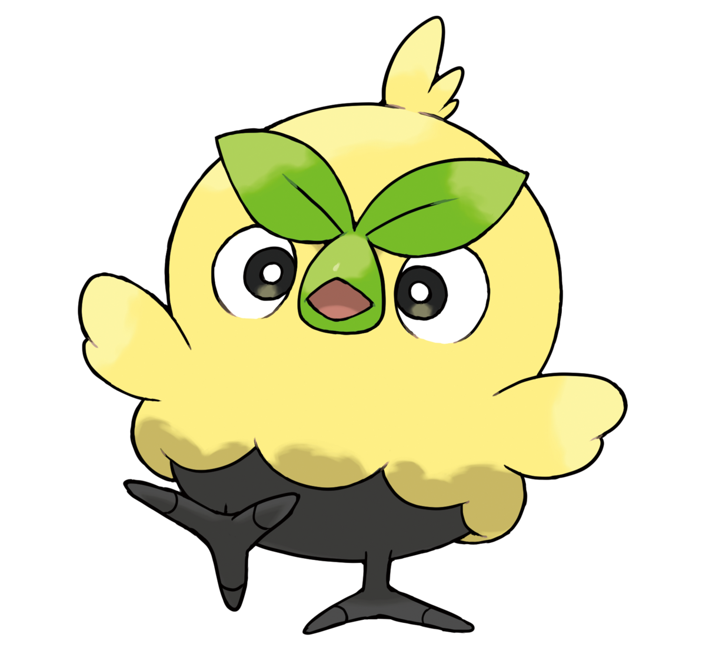

La Décima Generación: Pokémon Viento y Pokémon Oleaje
El 27 de febrero, durante el Pokémon Presents emitido por el 30º aniversario de la franquicia, nos dieron a conocer gran variedad de novedades, donde la más importante fue, sin duda alguna, el anuncio de Pokémon Viento y Pokémon Oleaje.
Durante este tráiler, pudimos apreciar la nueva región, de la cual aún desconocemos su nombre oficial. Dicha región parece estar basada en un conjunto de islas que recuerdan a los países del Sudeste Asiático, como Filipinas, Indonesia y Malasia. Además, conocimos a los nuevos protagonistas, a una pareja de Pikachu con una indumentaria veraniega, llamados Sr. Ventachu y Sra. Oleachu, exclusivos de Pokemon Viento y Pokémon Oleaje respectivamente, y a los tres iniciales:
- Browt

- Pombom

- Gecqua


Dicha nueva generación parece mezclar el sistema de islas tan carismático de Alola, con la libertad de exploración que ofrecían Pokémon Escarlata y Pokémon Púrpura. Nintendo planea lanzar estos juegos para 2027, exclusivamente para Nintendo Switch 2. Desde PokéNexo estimamos que, en caso de que no haya ningún retraso inesperado, Pokémon Viento y Oleaje se lanzarán en el último trimestre de 2027.
Cabe destacar que, cuando estos juegos salgan al mercado, estarán disponibles en nuestra tienda.